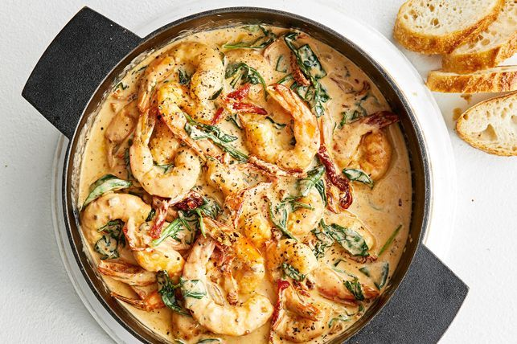

Dip some crusty bread into these creamy Italian garlic prawns. Packed with flavour and ready in 20 minutes, add some chilli for an arrabiata twist.
Heat 2 tbsp of reserved sun-dried tomato oil in a large frying pan over medium-high heat. Add one-third of the prawns and cook, turning occasionally, for 3-4 minutes or until the prawns change colour. Transfer to a plate. Repeat, in 2 more batches, with the remaining prawns.
Heat the remaining 1 tbsp reserved oil in the pan over medium-low heat. Add the garlic and pesto. Cook, stirring, for 1 minute or until aromatic. Pour in the cream and bring to a simmer. Add the prawns, sun-dried tomato slices and spinach. Cook, stirring, for 1-2 minutes or until heated through and the spinach has just wilted. Serve with crusty bread, if using.